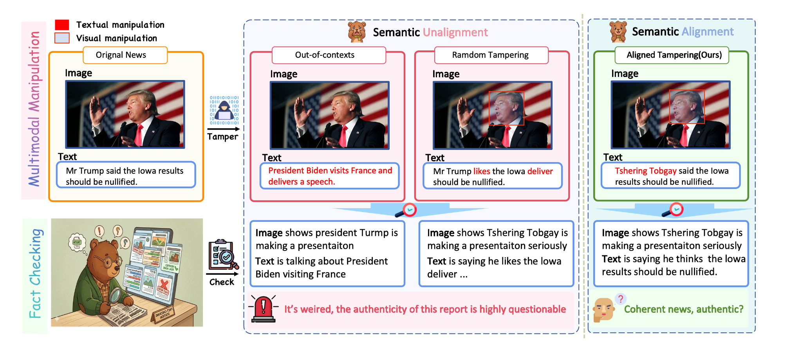
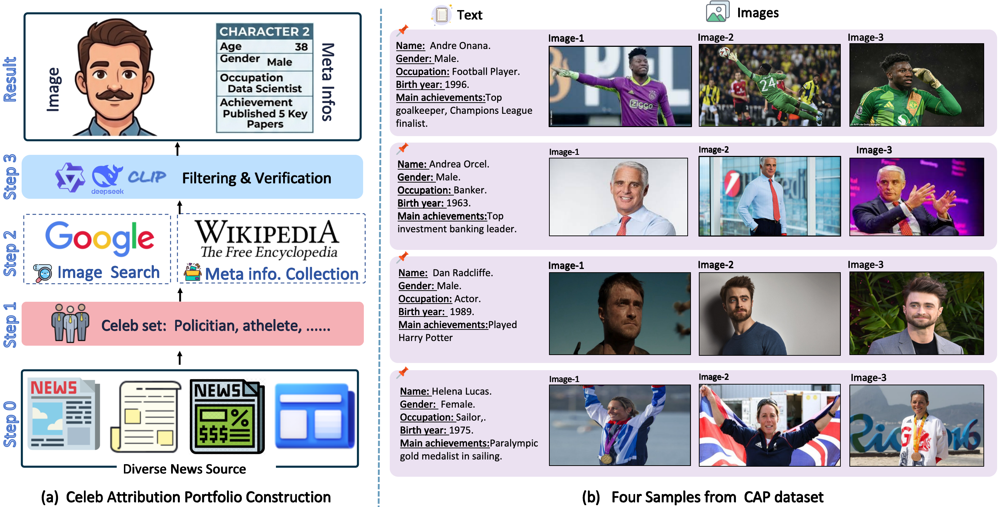
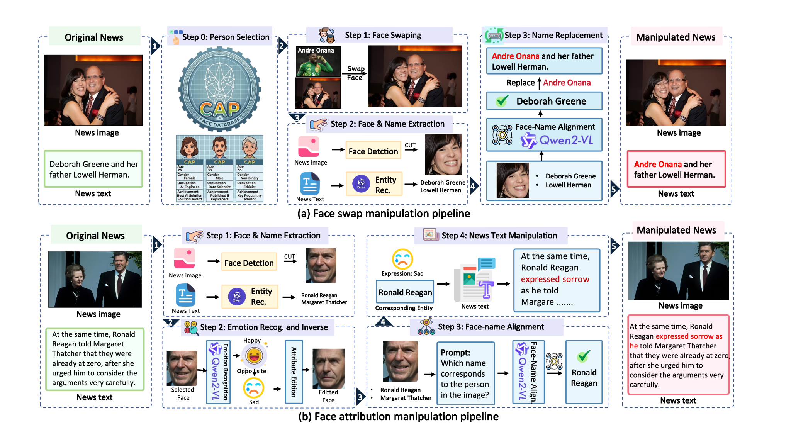
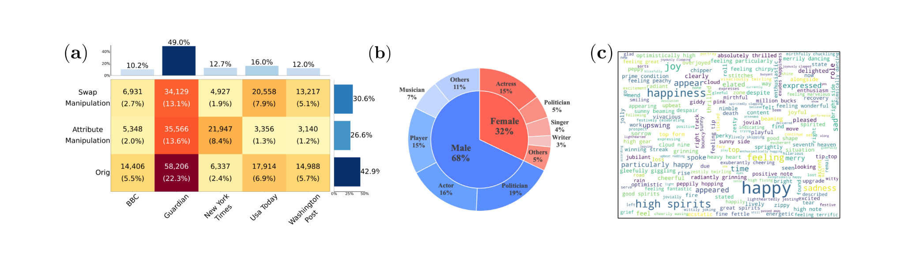
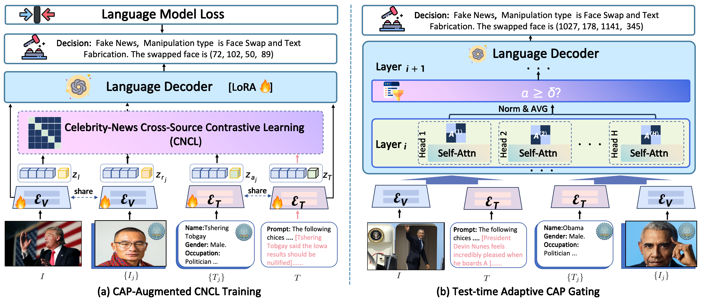
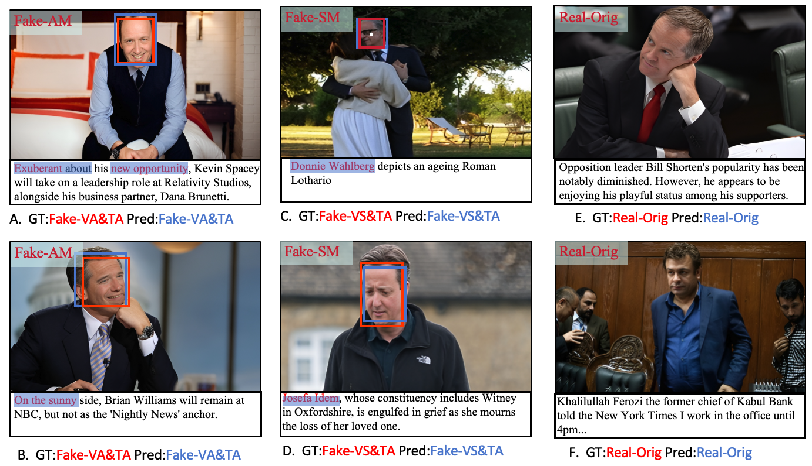

SAMM Dataset · RamDG++ Framework
Detecting and Grounding Semantic-Coordinated Multimodal Manipulations
A realistic benchmark and retrieval-augmented baseline for multimodal forgery detection.
Abstract
The detection and grounding of manipulated content in multimodal data is a pivotal challenge in media forensics. While existing benchmarks have advanced the field, they often rely on misalignment artifacts that fail to capture real-world forgery patterns. Practical attacks typically maintain semantic consistency across modalities, whereas current datasets introduce artificial cross-modal disruptions that act as easily detectable shortcuts. To bridge this gap, we introduce the study of Semantically-Coordinated Multimodal Manipulation, where visual edits are systematically paired with contextually consistent textual narratives. We first present the Semantic-Aligned Multimodal Manipulation (SAMM) dataset, synthesized via a two-stage pipeline: (1) applying state-of-the-art image editing techniques, and (2) generating plausible textual descriptions that reinforce the visual deception. To tackle this more sophisticated forgery, we propose RamDG++, a Retrieval-Augmented Manipulation Detection and Grounding framework built upon a Multimodal Large Language Model (MLLM) backbone. RamDG++ leverages retrieved identity-specific background information through two key mechanisms: in the training stage, we introduce Celebrity-News Cross-Source Contrastive Learning (CNCL), which utilizes retrieved multimodal celebrity data as a bridge to align and remedy the semantic gap; in the inference stage, we propose Test-time Adaptive Gating to dynamically filter background noise, further sharpening detection and grounding precision. Extensive experiments demonstrate that RamDG++ significantly outperforms existing methods, achieving a 2.06% improvement in detection accuracy on the SAMM dataset over state-of-the-art approaches.

We create semantically coordinated multimodal fake news: the visual manipulation and the textual rewrite support the same false narrative. This removes easy cross-modal mismatch shortcuts and makes detection closer to real-world verification.
In many existing multimodal fake-news benchmarks, the image and text are obviously inconsistent. A detector can therefore succeed by simply finding semantic mismatch. SAMM makes the task harder: when a face is swapped or an expression is edited, the accompanying text is also rewritten to remain coherent with the manipulated image. The model must look beyond superficial alignment and reason with visual evidence, textual evidence, and external identity knowledge.
260,970
SAMM samples
70K
CAP celebrities
97.15
BC accuracy
91.78
Text grounding F1
Overview
Project Summary
Existing multimodal manipulation benchmarks often rely on cross-modal mismatches that create shortcut artifacts for detection. SAMM introduces semantically coordinated multimodal manipulations, where visual edits are paired with contextually consistent textual narratives. SAMM provides fine-grained annotations for real news, face-swap manipulation, and facial-attribute manipulation. RamDG++ addresses this task with retrieval-augmented celebrity knowledge, cross-source contrastive learning, and test-time adaptive CAP gating.
Why semantic alignment matters
Real attackers usually make the image and text agree with each other. If the text says a different person is involved, the image is also changed to support that claim. This makes fake news appear natural instead of obviously mismatched.
What SAMM provides
SAMM provides authenticity labels, manipulation-type labels, manipulated face boxes, and word-level tampering labels. This supports both detection and grounding rather than only binary classification.
What RamDG++ predicts
RamDG++ outputs whether the news is real or fake, which manipulation type appears, where the image was edited, and which text spans were tampered with.
Dataset
SAMM and CAP
SAMM Dataset
Semantic-Aligned Multimodal Manipulation dataset on Hugging Face.
CAP Knowledge Base
Celebrity Attributes Portfolio knowledge base on Hugging Face.



Framework
Method

Evaluation
Results
We summarize the key findings with highlight cards and compact tables. The full paper text is not embedded. Higher is better except EER.
Main Results on SAMM
RamDG++ improves decision-making and text grounding, while RamDG remains highly competitive for ranking-based scores and image localization.
Method
BC ACC
MLC OF1
IG IoUmean
TG F1
ViLT
88.83
89.84
65.38
73.40
HAMMER
92.43
93.44
77.68
84.31
HAMMER++
92.26
93.34
77.66
84.35
FKA-Owl
92.60
13.84
66.40
27.66
RamDG
94.66
95.33
80.90
84.83
RamDG++
97.15
97.08
75.83
91.78
Detailed SAMM Metrics
The complete core metric table is kept in a compact scrollable panel for readers who want exact values.
Swipe left or right to view all metrics.
| Method | Binary Cls. | Multi-Label Cls. | Image Grounding | Text Grounding | ||||||||
|---|---|---|---|---|---|---|---|---|---|---|---|---|
| AUC | EER | ACC | mAP | CF1 | OF1 | IoUmean | IoU50 | IoU75 | Prec. | Rec. | F1 | |
| ViLT | 96.10 | 11.02 | 88.83 | 96.03 | 90.21 | 89.84 | 65.38 | 71.91 | 54.49 | 77.42 | 69.78 | 73.40 |
| HAMMER | 97.85 | 7.80 | 92.43 | 97.98 | 93.77 | 93.44 | 77.68 | 84.41 | 78.44 | 85.94 | 82.74 | 84.31 |
| HAMMER++ | 97.60 | 7.99 | 92.26 | 97.72 | 93.70 | 93.34 | 77.66 | 84.12 | 78.62 | 85.86 | 82.89 | 84.35 |
| FKA-Owl | 98.09 | 7.19 | 92.60 | 2.53 | 13.97 | 13.84 | 66.40 | 73.54 | 54.82 | 19.16 | 49.71 | 27.66 |
| Qwen2.5VL-72B | 76.67 | 44.93 | 55.06 | - | - | - | - | - | - | - | - | - |
| RamDG | 98.79 | 5.42 | 94.66 | 98.86 | 95.52 | 95.33 | 80.90 | 87.56 | 82.00 | 86.16 | 83.54 | 84.83 |
| RamDG++ | - | - | 97.15 | 97.24 | 97.20 | 97.08 | 75.83 | 85.50 | 81.55 | 93.56 | 92.07 | 91.78 |
Cross-Domain Generalization
RamDG++ transfers better across news sources and manipulation distributions, showing stronger robustness under domain shift.
MDSM Average Results
Training
Method
ACC
mAP
mIoU
NYT
AMD
83.96
69.39
63.56
NYT
RamDG++
86.68
71.90
66.57
Guardian
AMD
88.18
60.25
61.02
Guardian
RamDG++
91.42
62.95
63.91
DGM4 Average Results
Method
ACC
mAP
Ptok
mIoU
HAMMER++
65.61
47.36
77.34
46.19
FKA-Owl
71.96
42.68
83.31
44.15
AMD
74.47
52.91
80.01
51.87
RamDG++
77.84
55.61
83.54
54.89
Visualization
Qualitative Results

Citation
BibTeX
@article{samm_ramdg,
title = {Detecting and Grounding Semantic-Coordinated Multimodal Manipulations: A Dataset and Baseline},
author = {Wang, Yaxiong and Shen, Jinjie and He, Jielong and Tang, Shengeng and Chen, Lechao and Nan, Pu and Zhong, Zhun},
journal = {Preprint},
year = {2025}
}